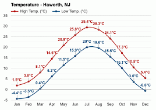
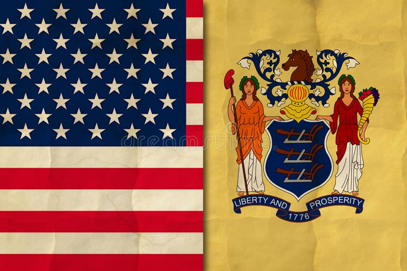

География

Штат Нью-Джерси расположен на Северо-востоке США и относится к Среднеатлантическим штатам США. На севере Нью-Джерси граничит с штатом Нью-Йорк, на западе — с Пенсильванией, а на юго-западе — со штатом Делавэр. На востоке побережье Нью-Джерси омывается водами Атлантического океана.
Штат Нью-Джерси ("Новый Джерси") получил свое название в честь британского острова Джерси, крупнейшего из Нормандских островов, расположенных в проливе Ла-Манш.
Рельеф Нью-Джерси постепенно поднимается с юго-восpтока, от прибрежных равнин Атлантической низенности, на северо-запад, к плоскогорьям и поросшим лесами горам района "Хребты и долины" горной системы Аппалачи. Вдоль побережья Нью-Джерси протянулся длинный и узкий песчаный остров Лонг-Бич.
Штат Нью-Джерси расположен на внушительном полуострове, который лежит в окружении долин рек Делавэр и Гудзон. Несмотря на то, что Нью-Джерси носит официальное название Garden State, самих садов в штате не сыщешь днем с огнем. Лишь в западных регионах, вблизи холмов, начинаются знаменитые сады. А вот восточная часть штата полностью находится во власти индустриальной Америки. Тут есть и густонаселенные курортные городки, и пригороды крупных мегаполисов. Делится штат Нью-Джерси на три региона: Северный, Центральный и Южный Джерси.
Климат
Климат Нью-Джерси — умеренный континентальный. Лето обычно жаркое и влажное, в среднем 25 дней в году температура составляет или превышает 32 °С. Зима — сравнительно холодная, температуры в северо-западной части штата обычно ниже, чем в других районах. Годовой уровень осадков меняется от 1100 до 1300 мм. Уровень твёрдых осадков в течение зимы меняется от 25-38 см на юге и на побережье до 38-76 см в центральной части и на северо-востоке и достигают 100—130 см на северо-западе. В среднем в году 120 дней с осадками.
Still Life 1 августа 2012 - 7 сентября 2012 +30-32 Круиз на Гавайи. 2 августа 2012 - 16 августа 2012 погода была отличная! California Dreamin' или путешествие в США (часть 2). 24 октября 2011 - 19 ноября 2011 Погода и температура были вполне типичными для Калифорнии. Днем около +20С. Вечерами прохладно. Ночью около +6С. Солнечная погода, временами дожди, в районе океана - туман..
Флаг
История флага восходит к войне за независимость. 23 марта 1779 года континентальный конгресс уполномочил и предписал главнокомандующему разработать цвет и отделку мундиров пехотинцев Нью-Джерси. Следуя этому поручению, генерал Джордж Вашингтон 2 октября того же года по предложению майора Эйсы Гардинера (англ.)русск.[2] утвердил жёлто-коричневый и тёмно-синий цвета в качестве основных цветов мундира. Эти цвета были им выбраны в честь голландцев, чьей колонией некогда был Нью-Джерси. 28 февраля 1780 года континентальным советом офицеров было издано постановление о том, что все полки Нью-Джерси должны обладать двумя флагами, а именно: флагом Соединённых Штатов и флагом штата, фоном которого должен стать цвет отделки мундиров пехотинцев. Формально флаг был принят в качестве официального символа Нью-Джерси на заседании нижней палаты законодательного собрания штата 11 марта 1896 года